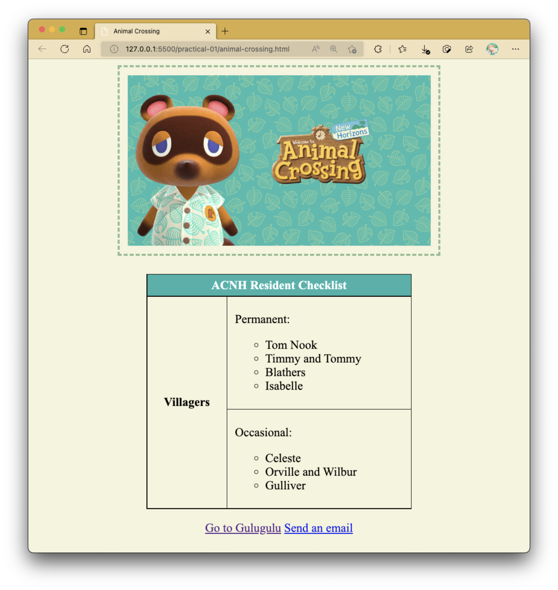

Practical 02: Applying CSS
This practical is an extension of Practical 01 - you will now attempt to implement visual styles to the content prepared in HTML.. unless you've done so already (in which case, you can consider putting in some more 😝).
Getting Started
CSS can be applied in three different methods. The encouraged method is having your CSS in an external CSS file (i.e., external style).
When referencing a CSS file, one ought to use the <link> tag within the head section of the HTML document.
For example, to reference styles.css in your HTML document, the placement of your CSS <link> reference should be like as follows:
CSS Responsiveness
CSS responsiveness typically has to do with making sure that websites can adapt to different screen resolutions from different devices. You can specify how content appears in different resolutions by using the media query tag.
For example, the yellowgreen background color styling only applies to screens that are at least 768px wide:
Detailed information is available in Lecture 4: HTML & CSS (Part 3). However, the concept behind it is easy to understand and should be considered if you plan to make your webpage accessible on mobile screens.
Local Custom Fonts
Ah, fonts. There's something about fonts that make it part of a document's or interface's aesthetic - when used right alongside complementing visual elements, you can produce an outlook that dictates a great efferevescence from how professional it looks or how creative the author's mind is. There are various methods of including different types of fonts, one of which include using one that's locally installed in your computer; another being linking to a font that's available in an online repository (e.g., Google Fonts). With regards to custom fonts stored locally on your computer though, there's something that you really, REALLY NEED to take note of.
Local Custom Font Location
You may be tempted to just include the font straight away like how it's plug-and-play with your other applications. For example, just by including the font inside a Fonts folder or installing it enables the font to be instantly recognized by Microsoft Word and be leveraged for use in your documents. However, while this also includes your webpages, it only works because the webpages are inside your computer.
You need to be aware that the custom fonts you may have (perhaps painstakingly or jovially) installed in your computer MAY OR MAY NOT exist in other computers that don't belong to you. This can be extended to external servers where websites are deployed into. You should expect computers to have a handful of fonts that act as the bare minimum for a commonplace interface, like "Times New Roman", "Courier New", "SimSun", and "Arial". Should you want to use custom fonts, you'll need to include it in your project folder.
"Just ask the other person to install the font into their computer."
The folder structure should be something like this if you wanted to include a custom font (this case, Roboto) locally within your project folder:
project
|-- css
|-- styles.css
|-- footer.css
|-- fonts (store your custom fonts in here)
|-- Roboto.ttf
|-- images
|-- catdog.png
|-- icon.svg
|-- js
|-- main.js
|-- index.html
|-- about.html
|-- error-404.html
From here, you can link your font file using a relative URL easily without needing to resort to digging your C: drive or what Home directory you have in your computer just to elicit the font.
Of course, if you don't link it, the font may still appear to work in your computer, but this by itself does not solve your problem with it not appearing in another computer.
Make sure that in your CSS file (or wherever you're using your embedded CSS, inline CSS does not have this luxury) that's being used, you use @font-face to declare use of the font on top:
Tasks
Task 1
In the webpages you created, apply the various CSS styles you've learnt in lecture (e.g., background color, fonts, image positioning, etc.). When applying CSS to your webpages, look up some good aesthetic principles web designers or developers take when designing their websites. Try to apply those principles in your webpages wherever possible.
Task 2
In another separate webpage called animal-crossing.html, try to replicate the following:

Requirements:
- The webpage should contain the contents as given in the figure.
- Set the background color to beige.
-
The top image should
- occupy a maximum width of 400px
- be surrounded by a darkgreen dashed border with 3px thickness
- have a padding of 10px
- display the message "Tom Nook" if the image cannot be displayed
-
Download the given Tom Nook image to use with this webpage. Feel free to rename the image if desired.
- Set the table borders to 1px solid black.
- Each table cell should have a 10px padding.
- The colored cell should have a lightseagreen background color.
- For each list, you are required to follow the list style type as shown in the output.
- For the first hyperlink, link it to
https://www.google.comthat opens in a new window. Do not use a different hyperlink text from what is given in the output. - For the second hyperlink, link it to an email address
tom_nook@mail.com. When the hyperlink is clicked, it should either open your computer's preferred mail application or an email website from your browser and open a new email draft. The subject should be pre-filled with: "I Need Miles".
{kind=link}
Optional Task: CSS Responsiveness
Try and implement a styling that only applies itself in mobile screens. You may look up a screen resolution for a mobile device of your choice (e.g., iPhones, tablet screens).
Mini-Tutorial: How to Center Images in HTML
In order to center <img> tags in your webpage, you may want to consider placing them into a block container element (e.g., <div>, <section>).
Then, set the text-align CSS property of that container element to center.
While text-align is seemingly meant to work only with text, it can be used to align any inline elements – this includes <img> elements.
You can view this mini-tutorial demonstration here to see this being applied in action: